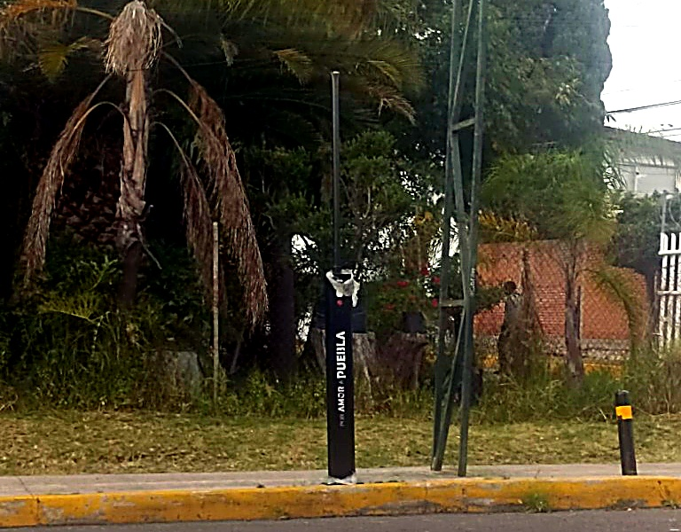
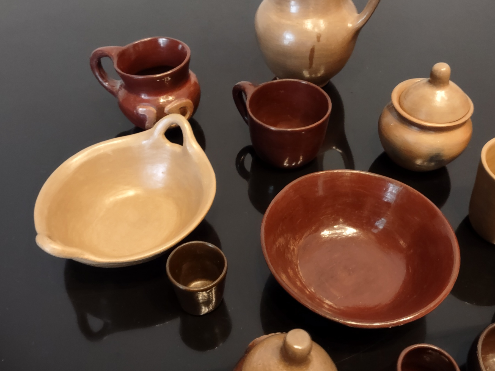
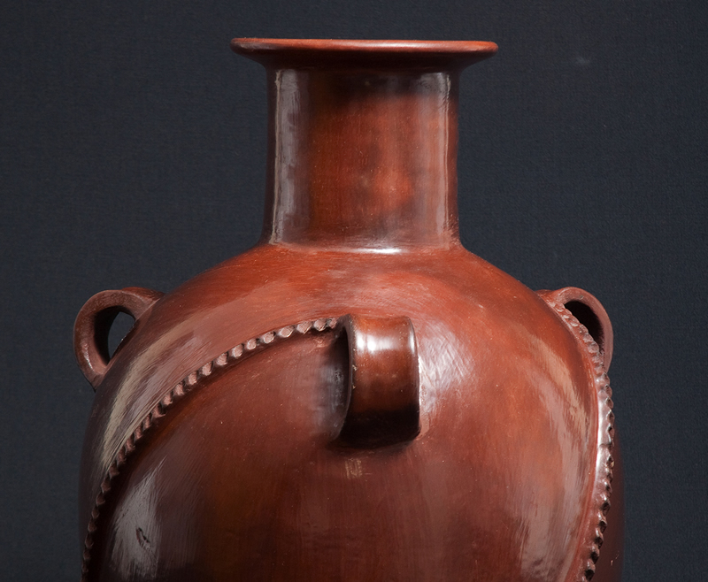
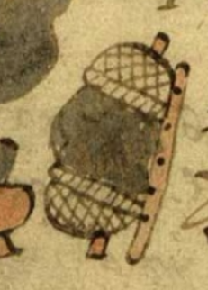
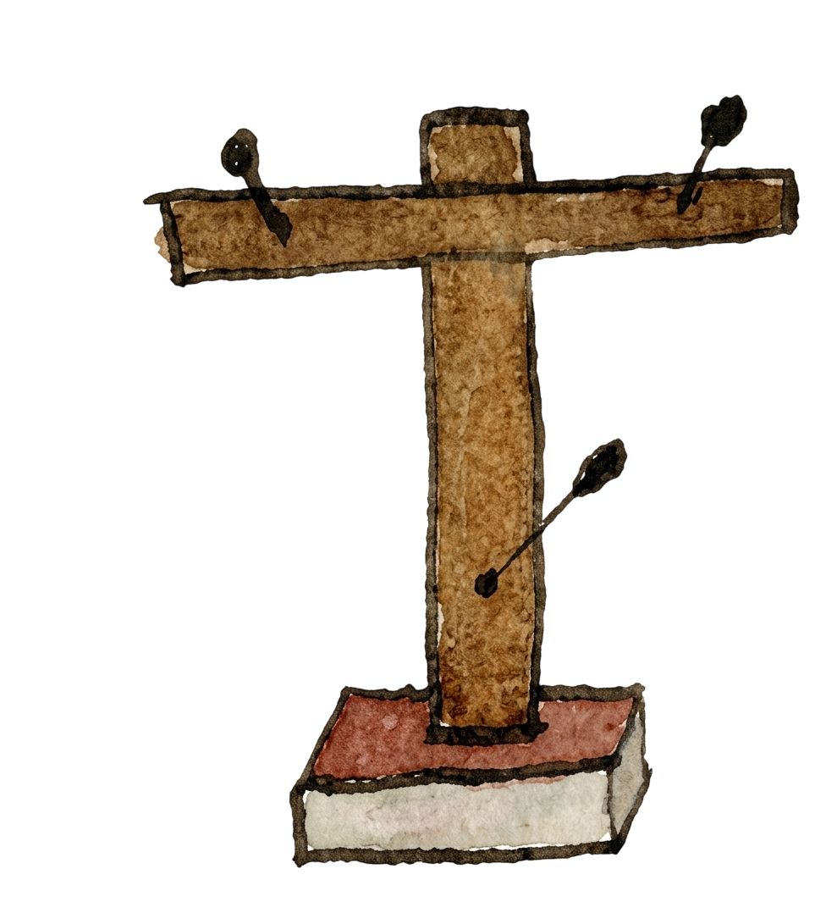
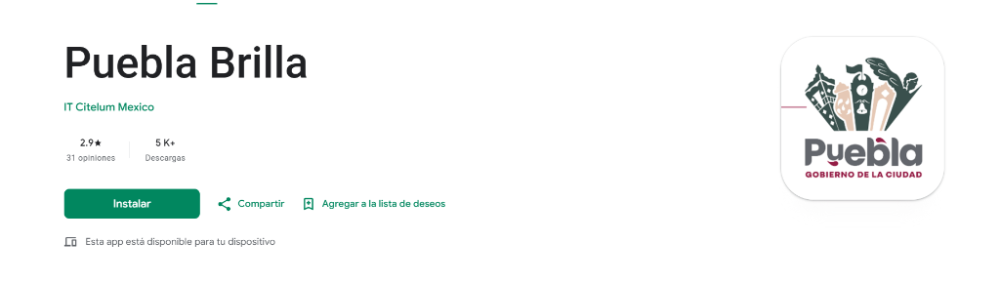
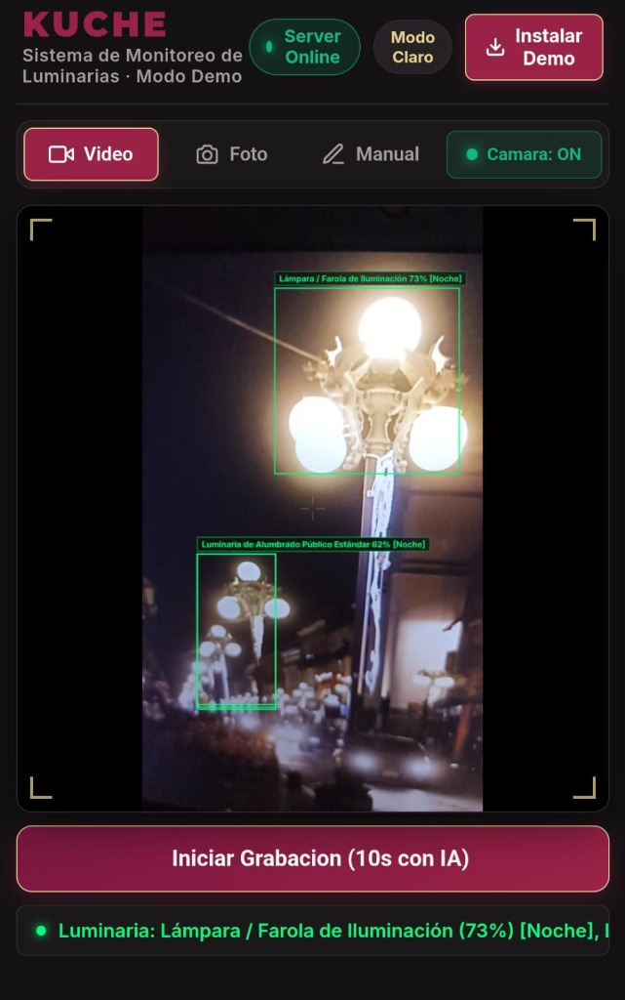
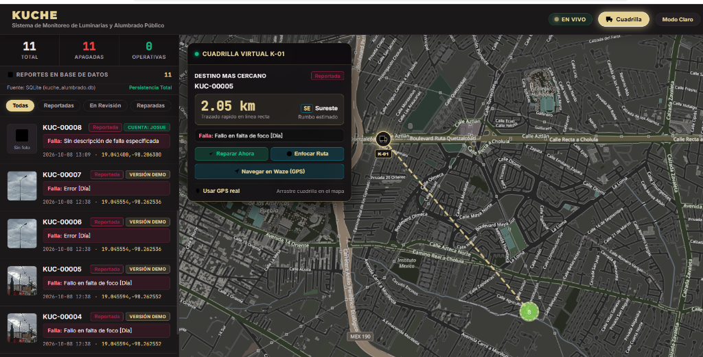

KUCHE ¿Qué es Kuche? Plataforma Inteligente de Reporte y Monitoreo de Alumbrado Público
KUCHE es una plataforma inteligente de participación ciudadana y software municipal que, mediante visión computacional e inteligencia artificial, permite detectar, validar y priorizar incidencias en la infraestructura de alumbrado público. Transforma el mantenimiento correctivo en preventivo, reduce el desperdicio eléctrico diurno y garantiza calles iluminadas y seguras para las familias poblanas.

El Nombre: Kuche ("Piojo"), sus Raíces y por qué lo Escogimos
Una identidad con arraigo histórico en el estado de Puebla que refleja con exactitud la analogía ingenieril del proyecto.
Kuche = "Piojo" (Parásito)
El nombre del proyecto es un vocablo de la lengua originaria Ngiigua (popoloca) de San Marcos Tlacoyalco, Puebla, documentado formalmente en el Vocabulario / Diccionario Ngiigua - Español (Stark Campbell, Luna Hernández y Luna Villanueva, 2020) con el significado directo de "piojo", un parásito biológico.
¿Por qué lo escogimos? Porque en ingeniería eléctrica y gestión urbana, el problema más silencioso y costoso se conoce como consumo parásito: luminarias que se quedan encendidas en pleno día por fotoceldas dañadas o circuitos en corto, drenando energía de la red y dinero del erario municipal sin beneficio alguno.
La Analogía Técnica: Erradicar el Consumo Parásito
Tal como un parásito consume nutrientes de su huésped sin aportar nada, las luminarias encendidas a mediodía se comen el presupuesto del municipio. Kuche detecta y erradica estas cargas parásitas mediante reporte oportuno.
Revalorización Lingüística Poblana
En lugar de recurrir a anglicismos genéricos, KUCHE rinde homenaje al patrimonio biocultural popoloca de nuestro estado, dotando al software de identidad local y arraigo territorial.
Inspiración e Identidad Visual del Proyecto Kuche
La identidad visual de Kuche no proviene de plantillas genéricas. Honra el patrimonio biocultural de Puebla, extrayendo su paleta cromática del barro bruñido de Los Reyes Metzontla, los telares de cintura y la cosmovisión Ngiigua (popoloca).

ALFARERÍA MILENARIABarro Bruñido de Metzontla
Piezas moldeadas y pulidas a mano con cuarzo de río. Su acabado mineral y tonos tierra-dorado definen la paleta sobria de nuestra plataforma.

TERRITORIO Y LENGUASan Marcos Tlacoyalco
Comunidad originaria de Puebla cuna de la lengua Ngiigua, de donde tomamos el vocablo 'Kuche' para erradicar el parásito energético.

GEOMETRÍA Y CENEFAIconografía de Telares
Estructuras geométricas ancestrales que enmarcan las divisiones, grecas y cenefas de navegación de todo nuestro ecosistema web.

SÍNTESIS GRÁFICAEmblema del Proyecto
Fusión gráfica de la visión artificial moderna con el rigor técnico y la identidad de los pueblos del sur del estado de Puebla.
Integrantes del Equipo y Mentoría Científica
Proyecto desarrollado por estudiantes e investigadores de la BUAP y la UTP, asesorados por el INAOEP, demostrando que en Puebla hay capacidad técnica de sobra para resolver los problemas de nuestras propias calles.
Farfán González Josué
Hernández Fortis Keyla Zoe
Magali Trujillo Tobón
Styveen Emiliano Rizo Hernandez
Dr. Alfredo Benítez Lara
Investigador Científico · INAOEP (Instituto Nacional de Astrofísica, Óptica y Electrónica)
Cómo se Conforma el Proyecto: Sistema Unificado Estatal
KUCHE está concebido como una red tecnológica unificada para los 217 municipios del estado de Puebla, evaluado financieramente y validado en campo tomando como polígono piloto de referencia al municipio de San Pedro Cholula.
Polígono Piloto de Validación: San Pedro Cholula
San Pedro Cholula es un territorio representativo de la zona metropolitana de Puebla con cabecera municipal, áreas urbanas densas y 13 juntas auxiliares distantes (como Momoxpan, San Matías Cocoyotla, San Cristóbal Tepontla, Santiago Momoxpan y San Juan Tlautla).
Arquitectura Diseñada para Escalar a Todo el Estado
La infraestructura de software está diseñada para expandirse progresivamente desde Cholula hacia toda la zona metropolitana (Puebla Capital, San Andrés, Cuautlancingo, Coronango, Amozoc) y a las regiones del interior del estado, adaptándose a las capacidades y recursos técnicos de cada localidad sin requerir servidores locales caros.
Problemática: Sistemas Fragmentados y Opciones a Medias
Actualmente cada zona del estado tiene un método distinto e inconexo para reportar luminarias rotas, y las pocas aplicaciones existentes son de uso a medias y exclusivas de la capital.
Cada Zona con Canales Aislados
En San Pedro Cholula los reportes dependen de llamadas telefónicas y mensajes de WhatsApp que se pierden; en San Andrés Cholula de un formulario web aislado; y en municipios del interior las personas tienen que ir físicamente a formarse a la oficina de Servicios Públicos. No existe un estándar estatal unificado.
Falla de Apps Actuales en la Capital
En Puebla capital opera la app "Puebla Brilla" (Citelum), pero apenas capta entre 100 y 200 reportes al mes con una calificación reprobatoria de 2.9 estrellas en Google Play Store y solo 5 mil descargas. La propia Secretaría municipal admitió que la app no permite acceder a detalle técnico ni georreferenciar con precisión el poste.
Descontento Generalizado (INEGI)
Según la encuesta ENCIG 2025 del INEGI, en Puebla solo el 34.3% de la población está satisfecha con el alumbrado (casi 7 de cada 10 inconformes). En la capital, el Plan de Desarrollo Municipal 2024-2027 señala que 4 de cada 10 frentes de manzana no tienen luz, con desatención de hasta el 66% en Santo Tomás Chautla y 60% en Canoa.

Puebla Brilla: Un Modelo a Medias que Evidencia la Urgencia de Kuche
La captura real de Google Play Store expone el límite de los esquemas tradicionales de concesión: una aplicación nativa que exige descarga obligatoria, apenas suma 5 mil descargas en una metrópoli de más de 1.7 millones de habitantes, y acumula una calificación reprobatoria de 2.9 sobre 5 debido a fallas de geolocalización, falta de confirmación técnica y desatención de reportes.
| Criterio Operativo | App Actual: Puebla Brilla | Plataforma Kuche (IA + PWA) |
|---|---|---|
| Formato de Acceso | Exige instalar app nativa (5K descargas) | Web PWA instantánea (cero descargas, QR o link) |
| Validación con IA | Sin visión artificial; formulario de texto ciego | Modelo YOLO integrado: detecta fotocelda y cabezal en 2s |
| Georreferenciación | Imprecisa; cuadrillas no encuentran el poste | GPS submétrico + geocercas municipales y padrón CFE |
| Alcance Territorial | Exclusiva de Puebla Capital | Estándar unificado para los 217 municipios del Estado |
| Trazabilidad y Folio | Reportes se pierden; sin auditoría abierta | Folio cívico descargable, auditoría ciudadana y Cédula PDF |
Visualización Gráfica: Datos Duros del Alumbrado en Puebla
Los propios datos oficiales del INEGI y del Plan Municipal de Desarrollo demuestran gráficamente el colapso de los métodos convencionales y la urgencia de modernización.
Satisfacción Ciudadana con el Alumbrado en Puebla
Frentes de Manzana sin Alumbrado en Zonas Críticas
Embudo de Pérdida de Reportes: Puebla Brilla vs Realidad
Áreas de Oportunidad: Superar la Variación entre Administraciones
Los sistemas de aviso de fallas dependen hoy del criterio de cada ayuntamiento: son diversos, no están unificados y cambian o mueren cada trienio.
La Oportunidad de una Plataforma Abierta y Continua
Actualmente los municipios prevén destinar contratos millonarios (como los 851 millones de pesos de mantenimiento en la capital) a empresas concesionarias cerradas sin resolver el problema de fondo: la falta de diagnóstico oportuno y de una herramienta soberana que le pertenezca a la ciudad.
KUCHE aprovecha la tecnología que ciudadanos e inspectores ya traen en el bolsillo para tender un puente directo, estandarizado y transparente entre vecinos y cuadrillas de electricistas, garantizando que el sistema no se pierda al cambiar de trienio gubernamental.
Las Pantallas que Conforman el Sistema Kuche
Presentamos la estructura secuencial de interfaces diseñadas para cada actor del ecosistema: la captura operativa en campo, el sistema de acceso cívico blindado y el panel exclusivo de mando municipal.
Modo Demo (Detección e Incidencias)
Es la interfaz operativa que tenemos actualmente desarrollada. Permite a ciudadanos e inspectores usar la cámara para detectar la luminaria mediante IA, identificar si está encendida de día o apagada, y levantar el reporte técnico con folio en menos de 2 minutos.
- Detección de cabezal y tecnología con IA
- Modalidades: Video 10s, Cámara y Manual
- Generación instantánea de cédula de reporte

MODO DEMO PWASistema de Logueo que Deseamos Implementar
El módulo cívico para garantizar la autenticidad de los reportes. Permite el acceso seguro de vecinos y presidentes auxiliares mediante correo, contraseña y validación de CURP, erradicando reportes falsos y spam ante dependencias oficiales.
- Blindaje de identidad mediante CURP
- Trazabilidad jurídica ante Servicios Públicos
- Consulta de folios sin descargas pesadas
Dashboard de Gestión y Cuadrillas
Diseñado exclusivamente para los ayuntamientos y dependencias gubernamentales que deseen implementar Kuche. Ofrece un centro de mando geoespacial para visualizar el mapa de luminarias, despachar brigadas y optimizar rutas.
- Mapa satelital GIS con clusters y calor de fallas
- Geocercas para urbes grandes y juntas auxiliares
- Refacciones necesarias y costeo antes de salir

DASHBOARD GISModelo Económico: Rentabilidad y Saneamiento Presupuestal
Evaluado sobre el polígono piloto de San Pedro Cholula (11,781 luminarias). Kuche no representa un gasto para el erario, sino una herramienta de saneamiento que se amortiza en menos de 5 meses.
Incluye desarrollo PWA, modelo de visión, IVA y 15% de reserva técnica ISO 21500.
Proyección a 3 años deduciendo OPEX. Supera ampliamente instrumentos como CETES.
Periodo de recuperación simple (Payback) de apenas 3.1 a 4.4 meses.
Recursos públicos retenidos en tesorería por luz evitada en CFE y logística de cuadrillas.
Desglose de Ahorros Consolidados Anuales
| Concepto Operativo | Cálculo Oficial en Cholula | Ahorro (MXN) |
|---|---|---|
| Consumo Parásito ante CFE (353 lámparas diurnas a 187.5W nominal + balastro NOM-013) |
353 lum. × 0.1875 kW × 12h/día × 365 días = 289,898 kWh a tarifa APBT ($3.10/kWh) | $751,000 a $898,684 |
| Combustible Diésel de Brigada (Se suprimen 35 km diarios de patrullaje a ciegas) |
10,500 km anuales evitados ÷ 3.5 km/l = 3,000 litros diésel × $25.00/l | $75,000 |
| Horas-Hombre de Cuadrillas (Recuperación de 3 horas diarias de búsqueda pasiva) |
900 horas anuales de brigada recuperadas × $350.00 MXN/hora cuadrilla | $315,000 |
| Mantenimiento Vehicular (Camión canastilla, neumáticos y brazos hidráulicos) |
Menor desgaste por reducción de rodamiento nocturno | $80,000 |
| BENEFICIO CONSOLIDADO ANUAL | Recursos liberados para bacheo, parques y compra de luminarias | $1,168,000 a $1,368,684 |
Kuche vs. Sensores Físicos (IoT)
Instalar sensores dedicados con telemetría en cada poste cuesta ~$2,000 MXN por luminaria y queda expuesto al robo constante de cableado y vandalismo.
11,781 postes con sensores + riesgo de robo.
Aprovecha los celulares que la gente ya trae. Ahorro >95%.
Representación proporcional de cómo se integra el ahorro anual proyectado de $1,368,684 MXN y el contraste de capital inicial frente a la instalación masiva de sensores físicos.
Marco Legal: Soberanía Municipal y Normas Oficiales
Kuche es un instrumento técnico de apoyo que fortalece las atribuciones legales de los ayuntamientos sin privatizar el servicio ni requerir cambios legislativos.
Mandato Municipal de Alumbrado
El servicio de alumbrado público es competencia y facultad exclusiva de los municipios. Kuche apoya la labor de Servicios Públicos sin invadir competencias; el control total se mantiene en el ayuntamiento.
Normatividad de Eficiencia CONUEE
Vigila los límites de Densidad de Potencia Eléctrica para Alumbrado (DPEA) y audita que las nuevas lámparas LED cumplan con el estándar de 95 a 105 lúmenes/watt y cinco años de garantía.
Privacidad con Borrado de Placas y Caras
La IA pasa un filtro de anonimización para difuminar automáticamente placas de automóviles y rostros antes de almacenar la imagen, requiriendo únicamente correo y coordenadas del poste.
Registro Nacional de Emisiones (RENE)
Las más de 128 toneladas de CO2e mitigadas anualmente en Cholula (factor FESEN 0.444 de CRE/SEMARNAT) permiten al municipio reportar indicadores limpios en programas climáticos estatales.
Fondos Verdes y FOTEASE (Arts. 4 y 38)
Permite celebrar convenios de coordinación intergubernamental y canalizar fondos verdes de transición energética del estado para modernizar calles sin endeudar al municipio.
Impacto en Desarrollo Sostenible
Alineación directa con los Objetivos de Desarrollo Sostenible: ODS 7 (Energía limpia), ODS 9 (Innovación de software), ODS 11 (Ciudades sostenibles) y ODS 17 (Alianzas ciudadanía-gobierno).